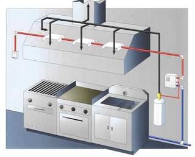
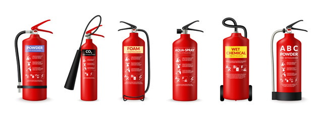

Wet Chemical /Kitchen Hood Fire Suppression System

Wet Chemical and Kitchen Hood Fire Suppression Systems are specifically designed, tested, and approved/listed to provide fire protection for commercial kitchen
cooking appliances, hoods, and ducts. These are classified as wet chemical pre-engineered fire suppression systems and can be found in all types of commercial
cooking and food service facilities.
We can assist you with making the right choice of restaurant fire suppression systems for your application. Our product offering includes all of the major systems
in today�s market. We appreciate the opportunity to design, install, service, and test & inspect your system. In the event you have a discharge, we will recharge
your system, so that you are able to resume business with minimal interruption.
Our staff is trained and certified by the top system manufacturers to design, install, test and maintain restaurant suppression systems.
How Do Wet Chemical /Kitchen Hood Systems Work?
A fire starts in protected area.
Heat sensitive fusible link detectors will automatically activate system. If automatic
actuation has not taken place, operate manual system by pulling handle or ring on manual pull station.
Cooking appliance fuel supply (gas and/or electric) is automatically shut off.
Fire extinguishing wet chemical agent is discharged through nozzles to protected area: cooking appliances, plenum and duct.
Wet chemical agent extinguishes by cooling grease surface and reacting chemically to produce foam layer on surface of grease.
Foam temporarily seals combustible vapors, stopping re-ignition.
Stand by with K-Class fire extinguisher. Use portable fire extinguisher if fire suppression system does not operate or if re-ignition/re-flash occurs.
Contact us to inspect and recharge system.

Wet Chemical /Kitchen Hood Fire Suppression Systems
Restaurant Fire Suppression Systems are UL listed as a complete system consisting of wet chemical
fire extinguishing agent, agent tank, agent discharge nozzles, releasing device, fuse link detection,
manual pull station, and gas/electric shutoff device. They are designed to discharge a predetermined
quantity of fire extinguishing agent in accordance with UL test criteria and listing. These systems
are recognized by NFPA 17A-Wet Chemical Extinguishing Systems, and NFPA 96-Installation of Equipment
for the Removal of Smoke and Grease Laden Vapors from Commercial Cooking Equipment.
They provide efficient, automatic detector response with fast acting fire suppression and no danger of
re-flash or re-ignition. There is no need for a constant supply of agent, no need to manually shut off
the fuel source (gas and/or electric) to the cooking appliance(s), and no danger of violent agent reaction
that may spread flame or spill cooking oil that could potentially injure personnel.
Wet Chemical /Kitchen Hood Fire Suppression System � Test & Inspection
Only authorized distributors of your system should service, test & inspect,
recharge or repair your system. Your system should be inspected at a maximum of 6-month intervals and
immediately after major hood/duct cleaning. The system will be inspected overall and tested to verify
automatic and manual actuation and fuel source shutdown. The fusible links will be changed and nozzle
caps replaced if they are missing.